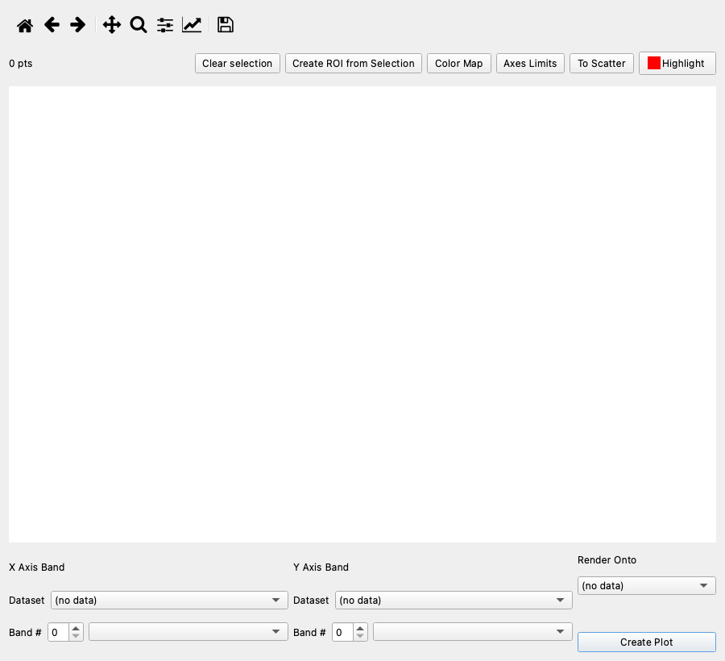
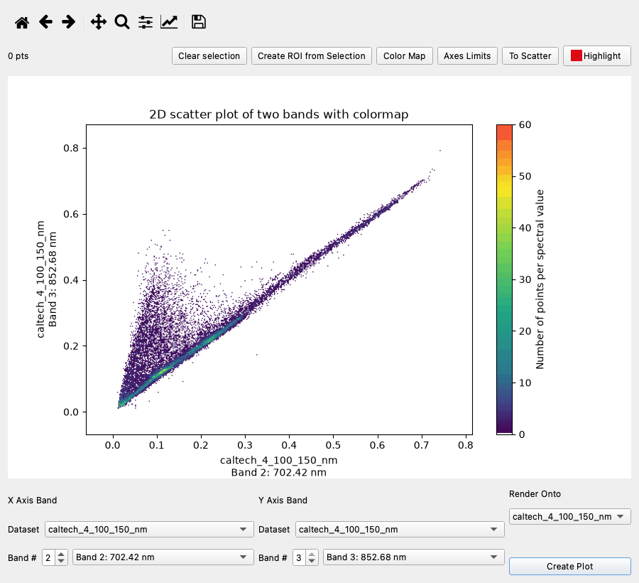
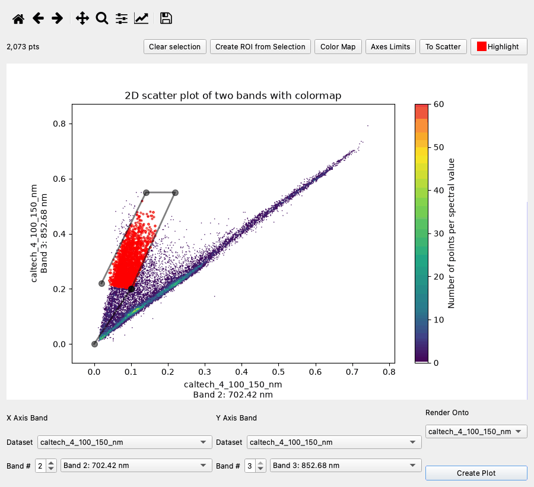
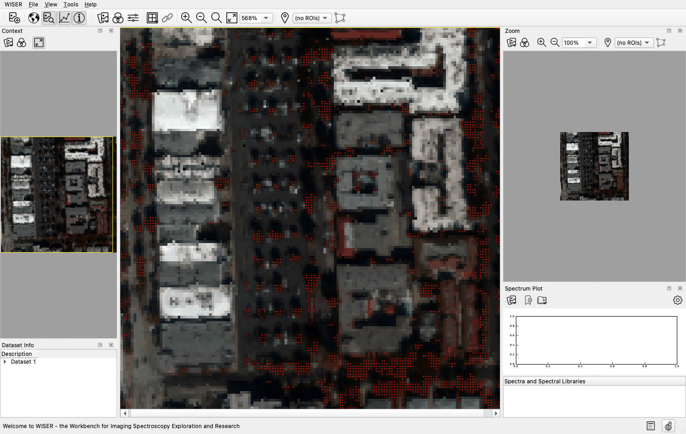
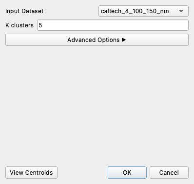
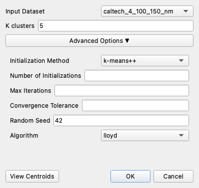
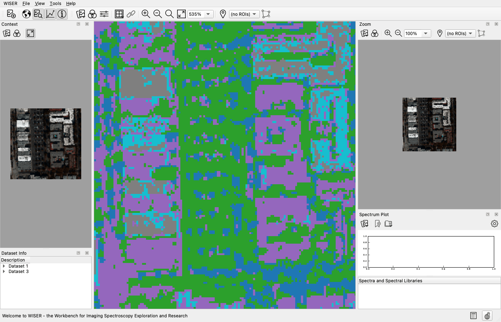
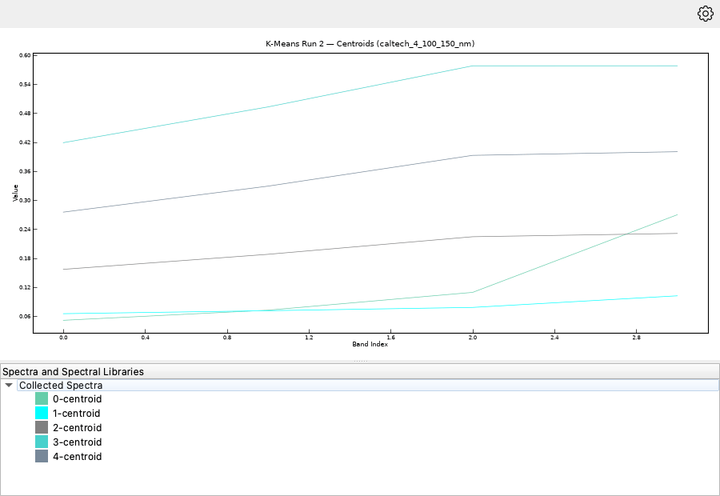

5. Classifying a Scene#
Goal: find structure in feature space with the interactive scatter plot, then let K-means partition the scene without being told what to look for.
Data: caltech_4_100_150_nm.hdr (from Tutorial 1).
Reference: Interactive Scatter Plot, K-Means Clustering.
Part A — Feature space#
Step 1 — Plot two bands against each other#
Open the campus scene as in Tutorial 1.
Right-click anywhere on the image and choose Data Analysis ▸ Interactive Scatter Plot. The same tool is on the Main Menu at Tools ▸ Data Analysis ▸ Interactive Scatter Plot.
At the bottom of the scatter plot window, X Axis Band and Y Axis Band each have a Dataset dropdown and a Band # box with a band dropdown beside it. Set them, and Render Onto, as follows:
X Axis Band —
caltech_4_100_150_nm, Band 2: 702.42 nmY Axis Band — the same dataset, Band 3: 852.68 nm
Render Onto — the same dataset
Click Create Plot.


Here all three dropdowns name the same dataset. They can name different datasets, as long as those share the same width and height, since points are matched to pixels by position.
Step 2 — Read the cloud#


Every pixel is one point, colored by how many pixels share that spot (the default is a density plot; To Scatter switches to plain dots, easier to read where the population is sparse).
The cloud has two parts:
The diagonal ridge from the origin to the upper right is the soil line — surfaces whose 702 nm and 852 nm reflectances rise together. Roofs, roads and bare ground lie along it, dark ones at the bottom, bright at the top.
The plume rising above the diagonal at low 702 nm values is vegetation: high near-infrared reflectance and low red reflectance. NDVI is high in the plume and near zero along the line.
Step 3 — Link the plot back to the image#
You can draw a selection on the plot at any time; there is no tool to turn on first.
Click around the vegetation plume to drop vertices, and close the polygon by clicking the first vertex again.
The selected points are outlined, the point count (for example
1,234 pts) updates, and the matching pixels are marked on the Render Onto image.




The highlighted pixels land exactly on the tree crowns, hedges and lawns. You went from a shape in feature space to a place on the ground without knowing in advance what either was.
Click Create ROI from Selection to turn that into a Region of Interest, and everything in Tutorial 3 becomes available.
Escape or Clear selection starts over. The plot’s other controls (colormap, axis limits, highlight color) are described in Interactive Scatter Plot.
Part B — K-means#
Step 4 — Run it#
Where the scatter plot compares two bands, K-means uses all of them: each pixel is a point in n-band space, and the algorithm partitions those points into K clusters, iterating until the centers stop moving.
Choose Tools ▸ Data Analysis ▸ K-means. The K-means Dialog opens.
Set Input Dataset to
caltech_4_100_150_nm.Set K clusters to
5.
Expand Advanced Options, set Random Seed to
42, and leave the other options at their defaults.
K-means starts from randomly chosen centers, so two unseeded runs on identical data give different clusters, numbered differently. Fix the seed and your figure is reproducible.
Click OK. The run proceeds in the background, so WISER stays usable. To watch its progress, click Show activity monitor at the bottom right of the main window.


Step 5 — Read the labels#
The result is a single-band label image named K-Means Labels (k=5): ...,
whose pixel values are cluster indices 0 to 4.
Switch to it with the Select dataset to view dropdown on the Main Toolbar.
Click Band chooser, select Grayscale, tick Use a colormap, and choose a categorical colormap such as tab10. Click OK.
A categorical colormap matters here: the pixel values are cluster names, not amounts, so a continuous colormap would imply that cluster 3 sits between 2 and 4 when the numbering is arbitrary.


Interpretation
The clusters recover the scene’s structure without being told what to look for: bright roofs, darker roofs, road and parking surfaces, canopy, and shadow. Shadow comes out as its own cluster rather than being grouped with the surface that is shadowed, because K-means is working on brightness and color together, and a shadowed roof is much darker than a sunlit one.
Note
Cluster colors and numbers mean nothing on their own. K-means is unsupervised: it finds groups, it does not name them. Cluster 3 is not “vegetation” until you check.
To check, reopen the K-means Dialog and click View Centroids. That does
not plot anything by itself. It opens K-Means — Past Runs, a table of every
run in the session with its k, initialization method and seed. Click View
on the row for your run, and the mean spectrum of each cluster is plotted
together in a new window.


Interpretation
Four of the five mean spectra rise gently and stay roughly parallel, separated mostly by overall brightness. Those are the roof, pavement and shadow classes, which differ in how much they reflect more than in shape.
The fifth is the one to look at. It starts lowest of all and then climbs steeply across the last interval, crossing two of the others. That is the red edge from Tutorial 3, and it is how you know which numbered cluster is your canopy class. Nothing in the label image could have told you that.
Step 6 — Choosing K#
There is no correct K. Ways to decide:
Run several. Try K = 3, 5 and 8 and see which boundaries persist.
Look at the centroids. If two clusters have near-identical spectra, K is too high.
Count your classes. If you know the scene holds four materials, start at four and add one for shadow.
Reduce dimensions first. On a cube with hundreds of bands, run PCA or MNF and cluster the leading components: faster, and far less prone to chasing noise.
Run K-means on a raw full-size 425-band cube and the result is visibly speckled, because the method partitions total variance, and on a high-resolution scene most of that is within-surface variation rather than between-material difference.
One Advanced Option changes what K-means is: Initialization Method set to
manual lets you pick the starting spectra, for example ROI means from
Tutorial 3, which turns it into a
semi-supervised classifier. The remaining options are described in
K-Means Clustering.
What you can now do#
Read a two-band feature space and recognize the soil line
Move between feature space and image space in both directions
Run a reproducible unsupervised classification
Identify what a cluster actually is, rather than assuming
Next: Tutorial 6 — PCA and MNF — compress hundreds of bands into the few that carry the information.